Recreate Take-home Exercise 1 prepared by your classmate
I have chosen HW1 from Aloysius Teng to be the base our this project. Since his project had its main focus on Joviality, and in HW2 I will expend this study further. This HW2 will demonstrate and explore two main purposes: 1. The distribution of selected factors, which is an intrinsic characteristic; 2. The single factor relationship between Y=Joviality and X=these factors.
The factors studied here are: 1. House size 2. Have kids 3. Age (agegroup) 4. Education level 5. Interest group 6. wage (incomegroup) 7. expense (expensegroup) 8. Checkin locations (funfactor)
Among which, 6.+7. come from data FinancialJournal.csv; 8. comes from CheckinJournal.csv. Due to the size+loading time limitation, I have rewrote these into simplier .rds files. Below are the methodologies for the 6.+7.+8: wage = “Wage” under column “category” expense = sum(“Education”,“Food”,“Shelter”,“Recreation”) under column “category” Checkin = sumif column “Venue Type”
packages = c('tidyverse', 'ggdist', 'gghalves', 'ggridges','knitr', 'ggpubr')
for(p in packages){
if(!require(p, character.only = T)){
install.packages(p)
}
library(p, character.only = T)
}
Read Files
participants <- read_csv("Data/Participants.csv")
wage <- read_rds("data/wage.rds")
expense <- read_rds("data/expense.rds")
checkin <- read_rds("data/Checkin.rds")
Merge Files
The original density graph already served the purpose well. The total joviality distribution is somewhat uniform, with an average of 0.4938. I have added the mean line to indicate that.
ggplot(data=df,
aes(x = df$joviality)) +
geom_density() +
geom_vline(xintercept=mean(df$joviality),color="red")+
geom_text(aes(0.5,1, label = round(mean(df$joviality),4), hjust = 0))+
ggtitle("Figure 1: Joviality Distribution")+
xlab("joviality")+ylab("density")+
theme(plot.title = element_text(hjust = 0.5))
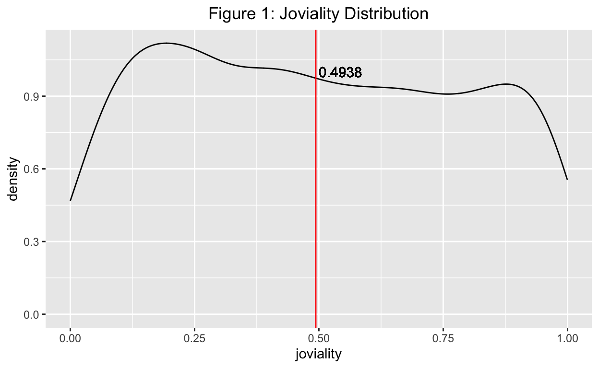
The original density graph already also served the purpose well. The joviality distribution between having kids or not does not differ much, participants that have kids have on average slightly higher joviality than participants don’t. I have added the mean lines of each to indicate that.
The code chunk below finds the conditional average.
Fig. 2 with mean lines added.
ggplot(df,
aes(x = joviality,
colour = haveKids)) +
geom_density() +
geom_vline(xintercept=avg_joviality_havekids_yes,color="pink")+
geom_vline(xintercept=avg_joviality_havekids_no,color="lightblue")+
geom_text(aes(0.5,0.8, label = round(avg_joviality_havekids_yes,4)), color="red", hjust = 0)+
geom_text(aes(0.5,0.9, label = "mean(yeshavekids)"), color="red", hjust = 0)+
geom_text(aes(0.5,0.8, label = round(avg_joviality_havekids_no,4)), color="blue",hjust = 1)+
geom_text(aes(0.5,0.9, label = "mean(nohavekids)"), color="blue", hjust = 1)+
ggtitle("Figure 2: Joviality vs Having kids")+
ylab("density")+
theme(plot.title = element_text(hjust = 0.5))
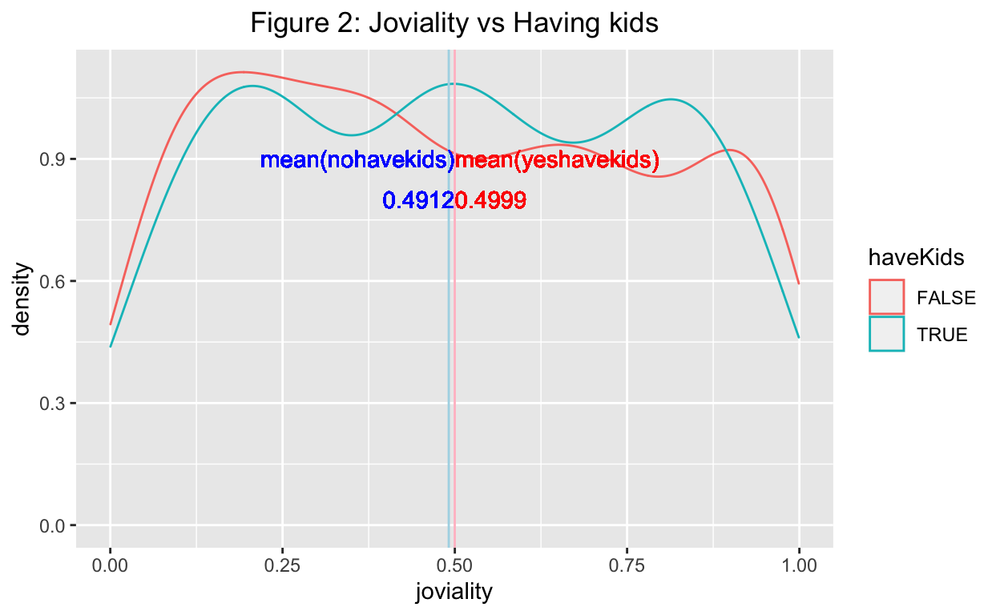
The original Boxplot + Violin plot has demonstrated well, no further enhancement is needed. Household of 2 or 3 on average has slightly higher joviality than household of 1.
ggplot(df,aes(y = joviality,x= as.character(householdSize))) +
xlab("house hold size") +
geom_violin(fill="light blue") +
geom_boxplot(alpha=0.5) +
stat_summary(geom = "point", fun.y="mean", colour ="red",size=2) +
ggtitle("Figure 3: Joviality vs Household Size")+
theme(plot.title = element_text(hjust = 0.5))
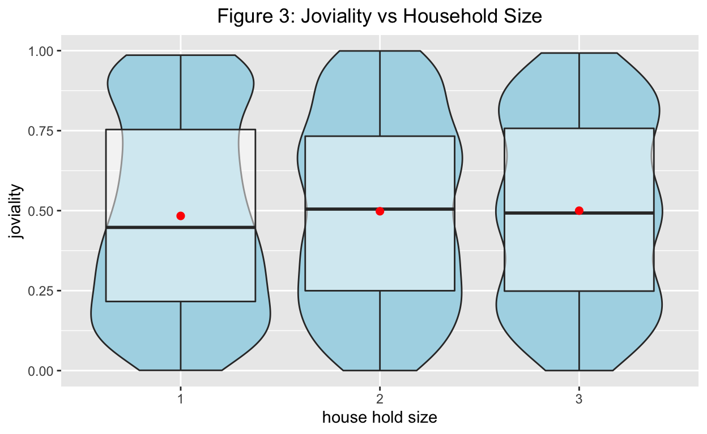
The original scatter plot indeed showed no dependency between joviality and age with abysmal R square statistics. However, once agegorup has been categorized, we can find some differences.
ggplot(df, aes(x= age, y=joviality)) +
geom_point() +
geom_smooth(method="lm", size=0.5) +
stat_regline_equation(label.y = 1.1, aes(label = ..rr.label..)) +
ggtitle("Figure 4-1: Joviality vs age")+
theme(plot.title = element_text(hjust = 0.5))
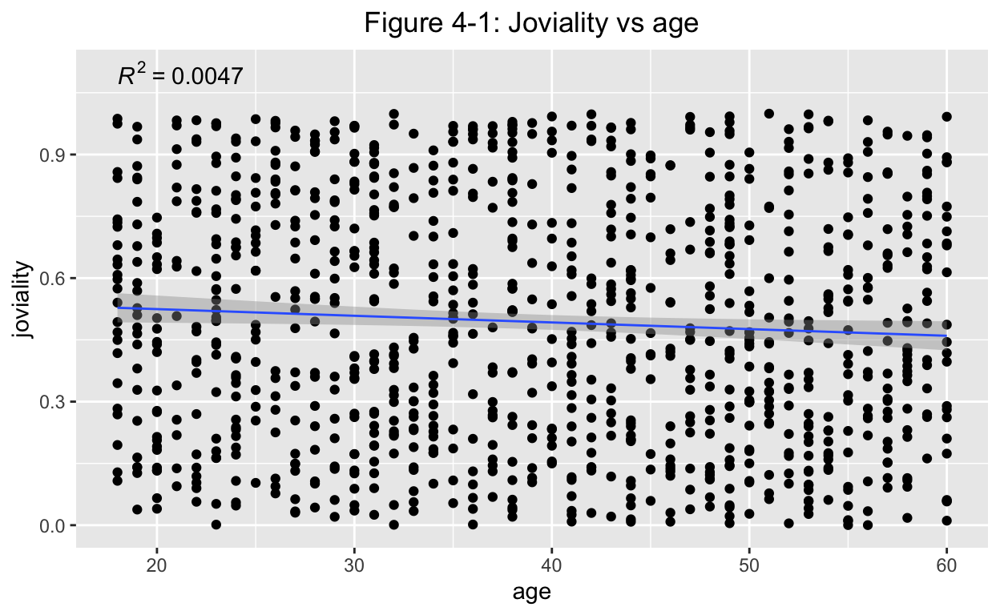
The code chunk below categorizes age into 4 groups.
df<-df%>%mutate(agegroup=case_when(age<30~"30 below",
age>=30 &age<40~"30-39",
age>=40 &age<50~"40-49",
age>=50 ~"50 and above"))
df1<-df%>% group_by(agegroup,joviality)
Below has indicated that the average of joviality decreases along with age.
ggplot(df,aes(y = joviality,x= agegroup)) +
xlab("age group") +
geom_violin(fill="light blue") +
geom_boxplot(alpha=0.5) +
stat_summary(geom = "point", fun.y="mean", colour ="red",size=2) +
ggtitle("Figure 4-2: Joviality vs Age Group")+
theme(plot.title = element_text(hjust = 0.5))
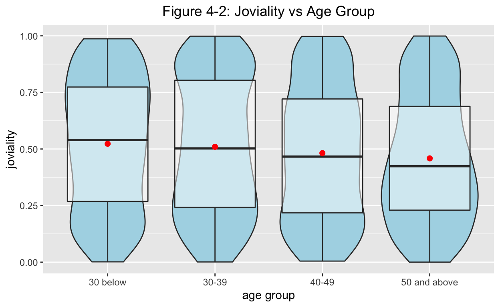
The original Boxplot + Violin plot has demonstrated this point well, no further enhancement is needed.
Below has indicated joviality increases with education level.
df2<-df %>% mutate(educationLevel = fct_relevel(educationLevel,
"Low", "HighSchoolOrCollege", "Bachelors",
"Graduate"))
ggplot(df2,aes(y = joviality,x= educationLevel)) +
xlab("education level") +
geom_violin(fill="light blue") +
geom_boxplot(alpha=0.5) +
stat_summary(geom = "point", fun.y="mean", colour ="red",size=2) +
ggtitle("Figure 5: Joviality vs Education Level")+
theme(plot.title = element_text(hjust = 0.5))
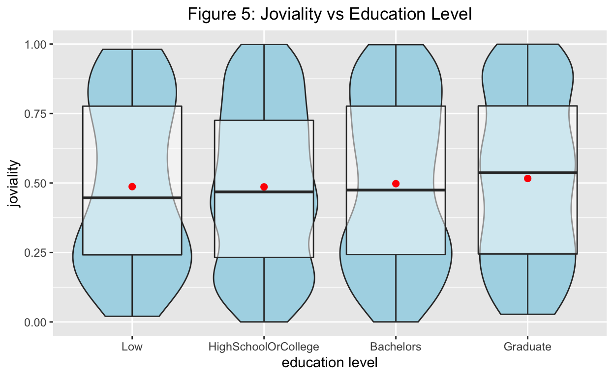
The original Boxplot + Violin plot has demonstrated this point well, no further enhancement is needed. Until we find how the interest group is defined, no qualitative conclusion can be drawn.
ggplot(df, aes(y = joviality,
x= reorder(interestGroup, joviality, FUN = mean))) +
xlab("interest group") +
geom_boxplot() +
stat_summary(geom = "point",
fun.y="mean",
colour ="red",
size=2) +
stat_summary(geom = "text",
aes(label=paste("mean=",round(..y..,2))),
fun.y="mean",
colour="red",
size=2,
vjust = -2) +
ggtitle("Figure 6: Joviality vs Interest Group")+
theme(plot.title = element_text(hjust = 0.5))
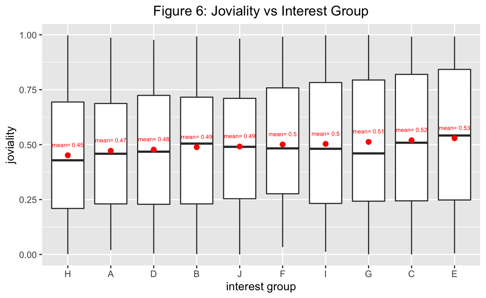
The scatter plot below has indicated joviality and wage has little dependency, with such low R square, we can almost conclude these two factors are not linearly dependent.
ggplot(df,
aes(x= wage,
y=joviality)) +
geom_point() +
geom_smooth(method="lm",
size=0.5) +
stat_regline_equation(label.y = 1.1, aes(label = ..rr.label..)) +
ggtitle("Figure 7: Joviality vs Wage")+
theme(plot.title = element_text(hjust = 0.5))
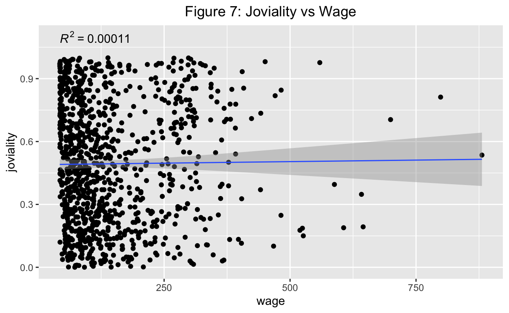
Below scatter plot has shown there is a negative trend between these two factors. We will take a closer look.
ggplot(df,
aes(x= expense,
y=joviality)) +
geom_point() +
geom_smooth(method="lm",
size=0.5) +
stat_regline_equation(label.y = 1.1, aes(label = ..rr.label..)) +
ggtitle("Figure 8-1: Joviality vs Expense")+
theme(plot.title = element_text(hjust = 0.5))
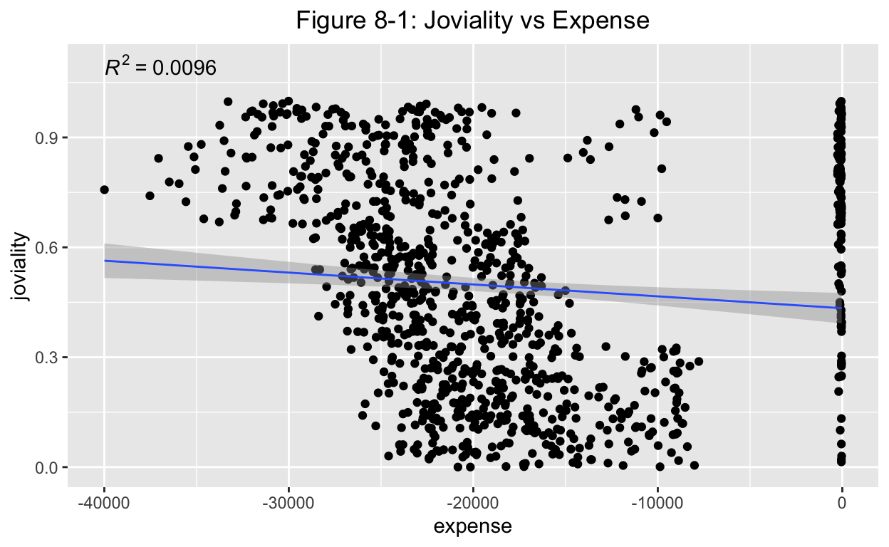
Before we can most definitely define “expense” for FinancialJournal.csv (I have some doubt to just use the summation of the four), we need to exclude the outliers, ie. the participants with expense that are close to 0. I have here defined the expense criteria to be more than 1000 (< -1000). Below has indicated a R square of 0.3, we can conclude there is dependency between these two.
df4 <- filter(df, expense< -1000)
ggplot(df4,
aes(x= expense,
y=joviality)) +
geom_point() +
geom_smooth(method="lm",
size=0.5) +
stat_regline_equation(label.y = 1.1, aes(label = ..rr.label..)) +
ggtitle("Figure 8-2: Joviality vs Wage")+
theme(plot.title = element_text(hjust = 0.5))
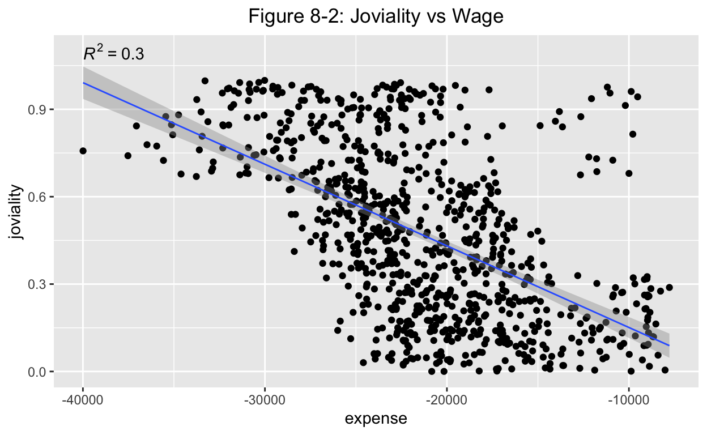
Below single factor regression statistic has shown adj. R square = 0.2971. As well as small enough P values, again indicating Y=joviality is statistic significantly depending on X=expense. This is a good finding! :)
Call:
lm(formula = joviality ~ expense, data = df4)
Residuals:
Min 1Q Median 3Q Max
-0.52949 -0.17693 -0.01365 0.16183 0.81356
Coefficients:
Estimate Std. Error t value Pr(>|t|)
(Intercept) -1.292e-01 3.189e-02 -4.05 5.57e-05 ***
expense -2.802e-05 1.452e-06 -19.30 < 2e-16 ***
---
Signif. codes: 0 '***' 0.001 '**' 0.01 '*' 0.05 '.' 0.1 ' ' 1
Residual standard error: 0.2409 on 878 degrees of freedom
Multiple R-squared: 0.2979, Adjusted R-squared: 0.2971
F-statistic: 372.5 on 1 and 878 DF, p-value: < 2.2e-169.1 First, I want to present the distribution of such “Checkin Locations” against the previous 7 factors.
Below code chuck categorizes low/mid/high income&expense with 0%-25%/25%-75%/75%-100% quantiles for further demonstration purpose.
df<-df%>%
mutate(incomegroup=case_when(wage<quantile(df$wage,probs=c(.25))~"Low Income",
df$wage>=quantile(df$wage,probs=c(.25))&wage<quantile(df$wage,probs=c(.75))~"Mid Income",
df$wage>=quantile(df$wage,probs=c(.75)) ~"High Income"))
df<-df%>%
mutate(expensegroup=case_when(expense<quantile(df$expense,probs=c(.25))~"High Expense",
df$expense>=quantile(df$expense,probs=c(.25))&expense<quantile(df$expense,probs=c(.75))~"Mid Expense",
df$expense>=quantile(df$expense,probs=c(.75)) ~"Low Expense"))
Below code chuck regroup Checkin Locations with the previous 7 factors for demonstration purpose.
g1 <- df %>%
select(c("householdSize","Apartment", "Pub", "Restaurant", "Workplace")) %>%
group_by(householdSize)%>%
summarise(across(c("Apartment", "Pub", "Restaurant", "Workplace"),~mean(.x,na.rm=TRUE)))
g1_1<-g1 %>%
select(c("householdSize","Apartment", "Pub", "Restaurant", "Workplace")) %>%
pivot_longer(c(Apartment,Pub,Restaurant,Workplace), names_to = "type", values_to = "value")
g2 <- df %>%
select(c("haveKids","Apartment", "Pub", "Restaurant", "Workplace")) %>%
group_by(haveKids)%>%
summarise(across(c("Apartment", "Pub", "Restaurant", "Workplace"),~mean(.x,na.rm=TRUE)))
g2_1<-g2 %>%
select(c("haveKids","Apartment", "Pub", "Restaurant", "Workplace")) %>%
pivot_longer(c(Apartment,Pub,Restaurant,Workplace), names_to = "type", values_to = "value")
g3 <- df %>%
select(c("agegroup","Apartment", "Pub", "Restaurant", "Workplace")) %>%
group_by(agegroup)%>%
summarise(across(c("Apartment", "Pub", "Restaurant", "Workplace"),~mean(.x,na.rm=TRUE)))
g3_1<-g3 %>%
select(c("agegroup","Apartment", "Pub", "Restaurant", "Workplace")) %>%
pivot_longer(c(Apartment,Pub,Restaurant,Workplace), names_to = "type", values_to = "value")
g4 <- df %>%
select(c("educationLevel","Apartment", "Pub", "Restaurant", "Workplace")) %>%
group_by(educationLevel)%>%
summarise(across(c("Apartment", "Pub", "Restaurant", "Workplace"),~mean(.x,na.rm=TRUE)))
g4_1<-g4 %>%
select(c("educationLevel","Apartment", "Pub", "Restaurant", "Workplace")) %>%
pivot_longer(c(Apartment,Pub,Restaurant,Workplace), names_to = "type", values_to = "value")
g4_2<-g4_1 %>% mutate(educationLevel = fct_relevel(educationLevel,
"Low", "HighSchoolOrCollege", "Bachelors",
"Graduate"))
g5 <- df %>%
select(c("interestGroup","Apartment", "Pub", "Restaurant", "Workplace")) %>%
group_by(interestGroup)%>%
summarise(across(c("Apartment", "Pub", "Restaurant", "Workplace"),~mean(.x,na.rm=TRUE)))
g5_1<-g5 %>%
select(c("interestGroup","Apartment", "Pub", "Restaurant", "Workplace")) %>%
pivot_longer(c(Apartment,Pub,Restaurant,Workplace), names_to = "type", values_to = "value")
g6 <- df %>%
select(c("incomegroup","Apartment", "Pub", "Restaurant", "Workplace")) %>%
group_by(incomegroup)%>%
summarise(across(c("Apartment", "Pub", "Restaurant", "Workplace"),~mean(.x,na.rm=TRUE)))
g6_1<-g6 %>%
select(c("incomegroup","Apartment", "Pub", "Restaurant", "Workplace")) %>%
pivot_longer(c(Apartment,Pub,Restaurant,Workplace), names_to = "type", values_to = "value")
g6_2<-g6_1 %>% mutate(incomegroup = fct_relevel(incomegroup, "Low Income", "Mid Income", "High Income"))
g7 <- df %>%
select(c("expensegroup","Apartment", "Pub", "Restaurant", "Workplace")) %>%
group_by(expensegroup)%>%
summarise(across(c("Apartment", "Pub", "Restaurant", "Workplace"),~mean(.x,na.rm=TRUE)))
g7_1<-g7 %>%
select(c("expensegroup","Apartment", "Pub", "Restaurant", "Workplace")) %>%
pivot_longer(c(Apartment,Pub,Restaurant,Workplace), names_to = "type", values_to = "value")
g7_2<-g7_1 %>% mutate(expensegroup = fct_relevel(expensegroup,"Low Expense", "Mid Expense", "High Expense"))
Fig. 9-1 to 9-7 show different distribution of Checkin Locations against the previous 7 factors.
ggplot(g1_1, aes(fill=type, y=value, x=householdSize)) +
geom_bar(position="stack", stat="identity")+
xlab("Household Size") + ylab("avg. of location checkin")+
theme(axis.title.y=element_text(angle=0,vjust = 0.5),axis.text = element_text(face="bold"))+
ggtitle("Figure 9-1: Location Checkin vs household size")+
theme(plot.title = element_text(hjust = 0.5))
ggplot(g2_1, aes(fill=type, y=value, x=haveKids)) +
geom_bar(position="stack", stat="identity")+
xlab("Have Kids") + ylab("avg. of location checkin")+
theme(axis.title.y=element_text(angle=0,vjust = 0.5),axis.text = element_text(face="bold"))+
ggtitle("Figure 9-2: Location Checkin vs Have Kids")+
theme(plot.title = element_text(hjust = 0.5))
ggplot(g3_1, aes(fill=type, y=value, x=agegroup)) +
geom_bar(position="stack", stat="identity")+
xlab("Age Group") + ylab("avg. of location checkin")+
theme(axis.title.y=element_text(angle=0,vjust = 0.5),axis.text = element_text(face="bold"))+
ggtitle("Figure 9-3: Location Checkin vs Age Group")+
theme(plot.title = element_text(hjust = 0.5))
ggplot(g4_2, aes(fill=type, y=value, x=educationLevel)) +
geom_bar(position="stack", stat="identity")+
xlab("Educational Level") + ylab("avg. of location checkin")+
theme(axis.title.y=element_text(angle=0,vjust = 0.5),axis.text = element_text(face="bold"))+
ggtitle("Figure 9-4: Location Checkin vs Educational Level")+
theme(plot.title = element_text(hjust = 0.5))
ggplot(g5_1, aes(fill=type, y=value, x=interestGroup)) +
geom_bar(position="stack", stat="identity")+
xlab("Interest Group") + ylab("avg. of location checkin")+
theme(axis.title.y=element_text(angle=0,vjust = 0.5),axis.text = element_text(face="bold"))+
ggtitle("Figure 9-5: Location Checkin vs Interest Group")+
theme(plot.title = element_text(hjust = 0.5))
ggplot(g6_2, aes(fill=type, y=value, x=incomegroup)) +
geom_bar(position="stack", stat="identity")+
xlab("Income Group") + ylab("avg. of location checkin")+
theme(axis.title.y=element_text(angle=0,vjust = 0.5),axis.text = element_text(face="bold"))+
ggtitle("Figure 9-6: Location Checkin vs Income Group")+
theme(plot.title = element_text(hjust = 0.5))
ggplot(g7_2, aes(fill=type, y=value, x=expensegroup)) +
geom_bar(position="stack", stat="identity")+
xlab("Expense Group") + ylab("avg. of location checkin")+
theme(axis.title.y=element_text(angle=0,vjust = 0.5),axis.text = element_text(face="bold"))+
ggtitle("Figure 9-7: Location Checkin vs Expense Group")+
theme(plot.title = element_text(hjust = 0.5))
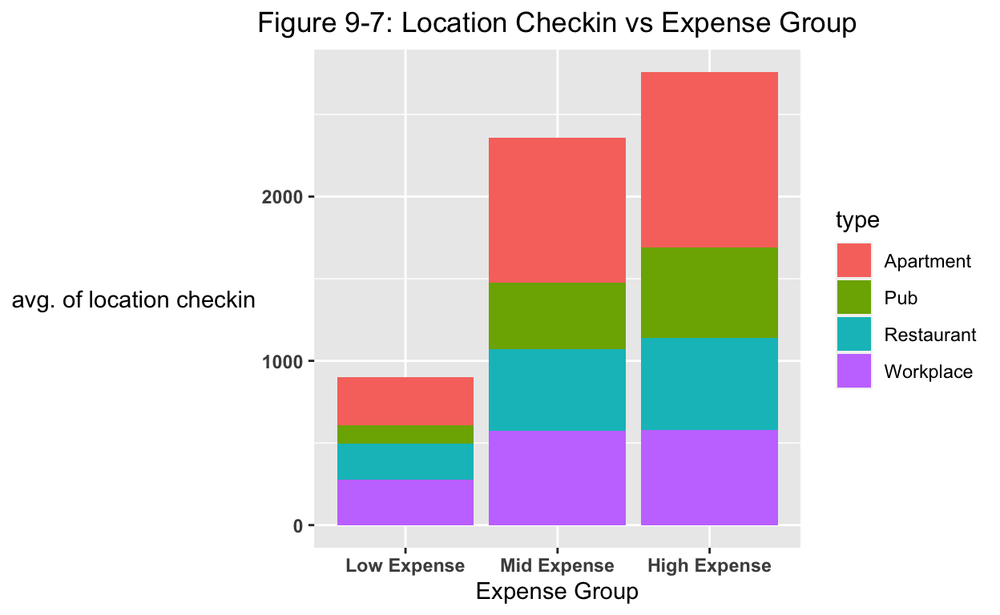
9.2 By common sense, I suspect joviality should have a relation with the frequency that one goes to restaurants and bars. After all, this is what got me through Covid. Hereby I have designed the 9th factor, funfactor, that is a ratio of (Pub+Restaurant visit)/(total visits).
df<-df%>%
mutate(funfactor=(Pub+Restaurant)/(Apartment+Pub+Restaurant+Workplace))
Voila! Guess girl is right! Below scatter plot shows positive correlation between joviality and fun factor.
ggplot(df,
aes(x= funfactor,
y=joviality)) +
geom_point() +
geom_smooth(method="lm",
size=0.5) +
stat_regline_equation(label.y = 1.1, aes(label = ..rr.label..)) +
ggtitle("Figure 8: Joviality vs Fun Factor")+
theme(plot.title = element_text(hjust = 0.5))
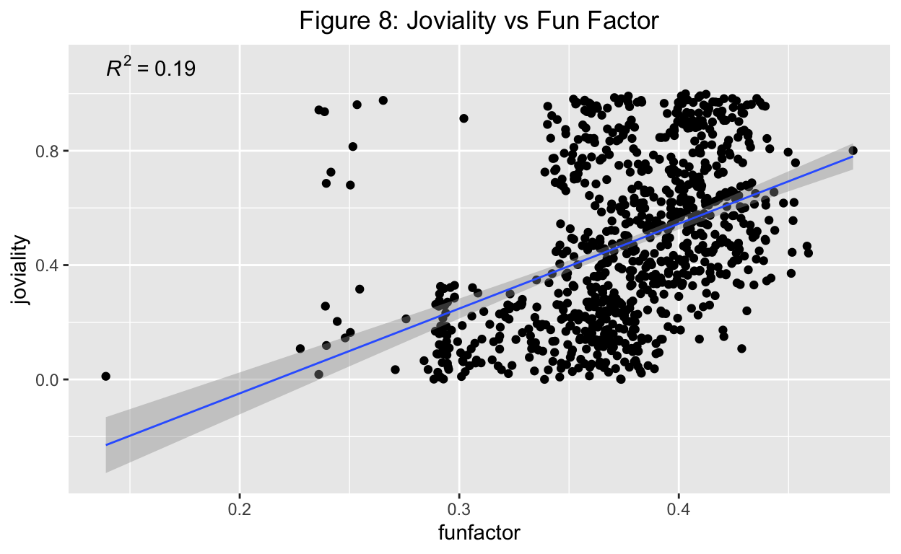
Below single factor regression statistics has once proven the dependency is statistic significant. With adj. R square at 0.1901 and small enough P vales.
df_joviality.funfactor.lm <- lm(joviality ~ funfactor, data = df)
summary(df_joviality.funfactor.lm)
Call:
lm(formula = joviality ~ funfactor, data = df)
Residuals:
Min 1Q Median 3Q Max
-0.52208 -0.19557 -0.03731 0.17075 0.88447
Coefficients:
Estimate Std. Error t value Pr(>|t|)
(Intercept) -0.64212 0.07835 -8.196 8.94e-16 ***
funfactor 2.96719 0.20762 14.291 < 2e-16 ***
---
Signif. codes: 0 '***' 0.001 '**' 0.01 '*' 0.05 '.' 0.1 ' ' 1
Residual standard error: 0.258 on 865 degrees of freedom
(144 observations deleted due to missingness)
Multiple R-squared: 0.191, Adjusted R-squared: 0.1901
F-statistic: 204.2 on 1 and 865 DF, p-value: < 2.2e-16I was surprised by the talents that my classmates possess, and genuinely have learned a lot in these two exercises from them. The skeleton of this study that Aloysius provided gave a good base structure, thank you mate and thank you Google.
Since Joviality aka Happiness, is such a fascinating and complex topic. A database with such size and valid inputs from multiple angles is ideal to quantify what happiness is made of. The final objective of this study should be a multi-factors linear regression model where Y=happiness, X=(not limited to) the above 8 factors.